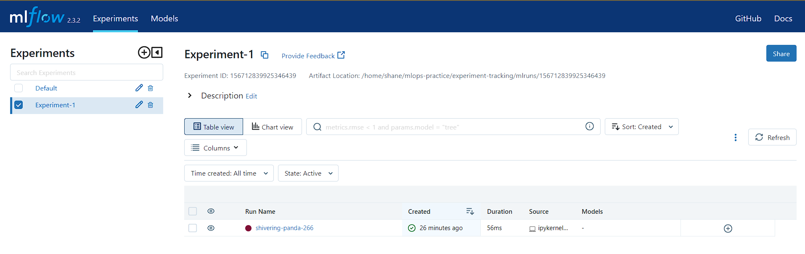
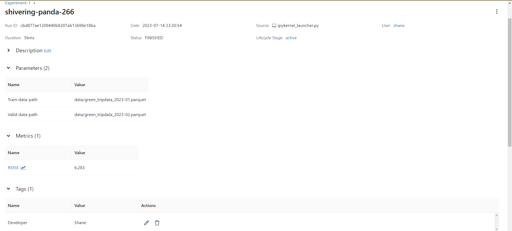
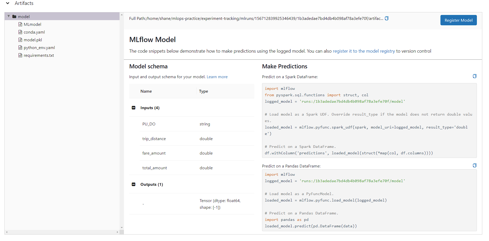

# !pip install mlflow
# or
# !conda install -c conda-forge mlflowExperiment Tracking with MLflow
In this tutorial, we are going to train a simple regression model. While training a model, we are going to use an experiment tracking tool called mlflow.
What is mlflow?
MLflow is a open-source experiment tracking tool. We can use mlflow to track experiments, experiment runs, artifacts related to experiment runs. MLflow has five components:
- MLflow Tracking
- MLflow Models
- MLflow Model Registry
- MLflow Projects
- MLflow RecipesWe are only going to use Tracking, Models and Model Registry here. You can see the rest here in the mlflow docs.
This blog or notebook is the notes for week 2 ( experiment tracking ) lectures of the datatalks mlops zoomcamp.
Install
We can install mlflow using pip or conda.
Imports
Here we are going to import a list of libraries that we need for this tutorial.
!python --versionPython 3.9.0from fastdownload import download_url
from pathlib import Path
import pandas as pd
from sklearn.linear_model import Lasso, LinearRegression
from sklearn.metrics import mean_squared_error
import mlflow
from mlflow.models.signature import infer_signatureTracking URI
Before starting any training or data preprocessing, we start by setting tracking uri and experiment for this mlflow experiment. Tracking uri can be
- localhost
- localhost with SQlite
- localhost with tracking server
- remote tracking server, backend and artifact storesIn this tutorial, we will start with localhost option and we will also use remote tracking server option in the second half of this tutorial.
LocalHost
In a localhost setting, the backend and artifact store share a local folder called ./mlruns.
mlflow.set_tracking_uri("mlruns/")
mlflow.set_experiment("Experiment-1")<Experiment: artifact_location='/home/shane/mlops-practice/experiment-tracking/mlruns/146920015920581846', creation_time=1689589700627, experiment_id='146920015920581846', last_update_time=1689589700627, lifecycle_stage='active', name='Experiment-1', tags={}>mlflow.set_experiment() is for setting the experiment name and we can see that a new experiment is created.
!tree ..
├── data
│ ├── green_tripdata_2023-01.parquet
│ └── green_tripdata_2023-02.parquet
├── env.yaml
├── experiment_tracking.html
├── experiment_tracking.ipynb
├── experiment_tracking.qmd
├── experiment_tracking_files
│ └── libs
│ ├── bootstrap
│ │ ├── bootstrap-icons.css
│ │ ├── bootstrap-icons.woff
│ │ ├── bootstrap.min.css
│ │ └── bootstrap.min.js
│ ├── clipboard
│ │ └── clipboard.min.js
│ └── quarto-html
│ ├── anchor.min.js
│ ├── popper.min.js
│ ├── quarto-syntax-highlighting.css
│ ├── quarto.js
│ ├── tippy.css
│ └── tippy.umd.min.js
├── imgs
│ ├── mlflow_run1.png
│ ├── mlflow_ui.png
│ ├── model.png
│ └── run1_metadata.png
└── mlruns
├── 0
│ └── meta.yaml
├── 146920015920581846
│ ├── 640f197c41044eb58e684d1967611220
│ │ ├── artifacts
│ │ │ └── model
│ │ │ ├── MLmodel
│ │ │ ├── conda.yaml
│ │ │ ├── model.pkl
│ │ │ ├── python_env.yaml
│ │ │ └── requirements.txt
│ │ ├── meta.yaml
│ │ ├── metrics
│ │ │ └── RMSE
│ │ ├── params
│ │ │ ├── Train-data-path
│ │ │ └── Valid-data-path
│ │ └── tags
│ │ ├── Developer
│ │ ├── mlflow.log-model.history
│ │ ├── mlflow.runName
│ │ ├── mlflow.source.name
│ │ ├── mlflow.source.type
│ │ └── mlflow.user
│ ├── 830a1dba067e437abf9569d4b2481d7c
│ │ ├── artifacts
│ │ │ └── model
│ │ │ ├── MLmodel
│ │ │ ├── conda.yaml
│ │ │ ├── model.pkl
│ │ │ ├── python_env.yaml
│ │ │ └── requirements.txt
│ │ ├── meta.yaml
│ │ ├── metrics
│ │ │ └── RMSE
│ │ ├── params
│ │ │ ├── Train-data-path
│ │ │ └── Valid-data-path
│ │ └── tags
│ │ ├── Developer
│ │ ├── mlflow.log-model.history
│ │ ├── mlflow.runName
│ │ ├── mlflow.source.name
│ │ ├── mlflow.source.type
│ │ └── mlflow.user
│ └── meta.yaml
└── models
└── nyc-taxi-regressor
├── meta.yaml
└── version-1
└── meta.yaml
25 directories, 55 filesWe can run mlflow ui in terminal to access, well, mlflow ui.
 :
:
Downloading dataset
The dataset that we are using for this tutorial is NYC TLC Trip Record dataset.
We are going to predict duration of a taxi ride.
data_path = Path('data')
if not data_path.exists():
data_path.mkdir(exist_ok=True)First, we are creating a data folder data to which we are going to download the datasets.
def download_data(year : int, month : int, data_path : Path) -> None:
'''download nyc green taxi data in parquet form and save it in data_path'''
url = f"https://d37ci6vzurychx.cloudfront.net/trip-data/green_tripdata_{year}-{month:0>2}.parquet"
download_url(url, dest=data_path, show_progress=True)
download_data(2023, 1, data_path)
download_data(2023, 2, data_path)
100.46% [1433600/1427002 00:01<00:00]
100.41% [1540096/1533740 00:01<00:00]
Quick side note for pyformatting,
month = 2
print(f"month == {month} : {month:0>2}")
month = 11
print(f"month == {month} : {month:0>2}")month == 2 : 02
month == 11 : 11!tree ..
├── data
│ ├── green_tripdata_2023-01.parquet
│ └── green_tripdata_2023-02.parquet
├── env.yaml
├── experiment_tracking.html
├── experiment_tracking.ipynb
├── experiment_tracking.qmd
├── experiment_tracking_files
│ └── libs
│ ├── bootstrap
│ │ ├── bootstrap-icons.css
│ │ ├── bootstrap-icons.woff
│ │ ├── bootstrap.min.css
│ │ └── bootstrap.min.js
│ ├── clipboard
│ │ └── clipboard.min.js
│ └── quarto-html
│ ├── anchor.min.js
│ ├── popper.min.js
│ ├── quarto-syntax-highlighting.css
│ ├── quarto.js
│ ├── tippy.css
│ └── tippy.umd.min.js
├── imgs
│ ├── mlflow_run1.png
│ ├── mlflow_ui.png
│ ├── model.png
│ └── run1_metadata.png
└── mlruns
├── 0
│ └── meta.yaml
├── 146920015920581846
│ ├── 640f197c41044eb58e684d1967611220
│ │ ├── artifacts
│ │ │ └── model
│ │ │ ├── MLmodel
│ │ │ ├── conda.yaml
│ │ │ ├── model.pkl
│ │ │ ├── python_env.yaml
│ │ │ └── requirements.txt
│ │ ├── meta.yaml
│ │ ├── metrics
│ │ │ └── RMSE
│ │ ├── params
│ │ │ ├── Train-data-path
│ │ │ └── Valid-data-path
│ │ └── tags
│ │ ├── Developer
│ │ ├── mlflow.log-model.history
│ │ ├── mlflow.runName
│ │ ├── mlflow.source.name
│ │ ├── mlflow.source.type
│ │ └── mlflow.user
│ ├── 830a1dba067e437abf9569d4b2481d7c
│ │ ├── artifacts
│ │ │ └── model
│ │ │ ├── MLmodel
│ │ │ ├── conda.yaml
│ │ │ ├── model.pkl
│ │ │ ├── python_env.yaml
│ │ │ └── requirements.txt
│ │ ├── meta.yaml
│ │ ├── metrics
│ │ │ └── RMSE
│ │ ├── params
│ │ │ ├── Train-data-path
│ │ │ └── Valid-data-path
│ │ └── tags
│ │ ├── Developer
│ │ ├── mlflow.log-model.history
│ │ ├── mlflow.runName
│ │ ├── mlflow.source.name
│ │ ├── mlflow.source.type
│ │ └── mlflow.user
│ └── meta.yaml
└── models
└── nyc-taxi-regressor
├── meta.yaml
└── version-1
└── meta.yaml
25 directories, 55 filesDatasets are downloaded using fastdownload library from fastai.
Preprocessing
def read_dataframe(filename: Path)-> pd.DataFrame:
df = pd.read_parquet(filename)
df["duration"] = df["lpep_dropoff_datetime"] - df["lpep_pickup_datetime"]
df.duration = df["duration"].apply(lambda td : td.total_seconds() / 60)
df = df[(df.duration >= 0) & (df.duration <= 60) ]
categorical_data = ["PULocationID", "DOLocationID"]
df[categorical_data] = df[categorical_data].astype(str)
df["PU_DO"] = df['PULocationID'] + "_" + df['DOLocationID']
return dfSince the files are in parquet format, we use pd.read_parquet() method.
# df["duration"] = df["lpep_dropoff_datetime"] - df["lpep_pickup_datetime"]
# df.duration = df["duration"].apply(lambda td : td.total_seconds() / 60)We want to calculate the duration of each trip. The trip duration is calculated by subtracting pickup datetime from dropoff datetime.
We also want to get the duration in minute. We get the total seconds and divided by 60.
df = read_dataframe("data/green_tripdata_2023-01.parquet")
df_val = read_dataframe("data/green_tripdata_2023-02.parquet")def preprocess(df : pd.DataFrame) -> tuple((pd.DataFrame, pd.DataFrame)):
categorical = ["PU_DO"]
numerical = ["trip_distance", "fare_amount", "total_amount"]
X = df[categorical + numerical]
y = df.duration
return X, y
X, y = preprocess(df)
X_val, y_val = preprocess(df_val)After loading train and validation dataset and performing preprocessing, we now have features X and targets y.
Now we can start training the model.
Model Training
def train(X, y):
model = LinearRegression()
model.fit(X,y)
return modelWe will initialize mlflow run as
# with mlflow.start_run() as run:and wrap up the training inside of it.
set_tag: for tracking metadatalog_param: for logging parameterslog_metric: for logging metric
In the example below, we use set_tag for tracking developer name, log_param for tracking data folder used for training and validation ,and log_metric for tracking validation rmse metric.
Some other useful methods are : - set_tags : Log a batch of tags for the current run. - log_params : Log a batch of params for the current run. - log_artifact : Log a local file or directory as an artifact of the currently active run. - log_artifacts : Log all the contents of a local directory as artifacts of the run
with mlflow.start_run() as run:
mlflow.set_tag("Developer", "Shane")
mlflow.log_param("Train-data-path", "data/green_tripdata_2023-01.parquet")
mlflow.log_param("Valid-data-path", "data/green_tripdata_2023-02.parquet")
model = train(X, y)
preds = model.predict(X_val)
rmse = mean_squared_error(y_val, preds, squared=False)
mlflow.log_metric('RMSE', rmse)
signature = infer_signature(X_val, preds)
model_uri = mlflow.sklearn.log_model(model, artifact_path="model", signature=signature).model_uri

The first run can be seen in the above picture with the name, shivering-panda-266. It is a random run name since we didn’t set a specific run name.

We can see the Train-data-path, Valid-data-path in the Parameters section, RMSE in metrics section and Developer in the Tags section.
Model Saving
# signature = infer_signature(X_val, preds)
# mlflow.sklearn.log_model(model, artifact_path="model", signature=signature)Model signatures define input and output schemas for MLflow models. Model signature is obtained here using infer_signature.
We can log a model using mlflow.<framework>.log_model. In this case, we are using mlflow.sklearn.log_model.

Since we add signature parameter, we can see the model input and output schema here. We can also see two ways that we can load the model and make predictions.
Auto Logging
We can also do auto logging by using mlflow.<framework>.autolog()
# mlflow.sklearn.autolog()Autologging is known to be compatible with the following package versions: 0.22.1 <= scikit-learn <= 1.2.2. Autologging may not succeed when used with package versions outside of this range.
Model Loading
We have saved the model using log_model. Now, we are going to load that model for prediction.
from mlflow import MlflowClient
client = MlflowClient(tracking_uri="mlruns")experiments = client.search_experiments()
for experiment in experiments:
print(f"Experiment Name : {experiment.name}")
print(f"\tExperiment id :{experiment.experiment_id}")
print(f"\tArtifact Location :{experiment.artifact_location}\n")Experiment Name : Experiment-1
Experiment id :146920015920581846
Artifact Location :/home/shane/mlops-practice/experiment-tracking/mlruns/146920015920581846
Experiment Name : Default
Experiment id :0
Artifact Location :/home/shane/mlops-practice/experiment-tracking/mlruns/0
Our experiment’s name is “Experiment-1” and the Experiment id for that is “146920015920581846”.
for experiment in experiments:
if experiment.name == "Experiment-1":
exp = experimentexp_id = exp.experiment_id
runs = client.search_runs(experiment_ids=[exp_id])
for run in runs:
print(f"run name : {run.info.run_name}")
print(f"\trun id : {run.info.run_id}")
print(f"\trmse : {run.data.metrics['RMSE']}")run name : popular-shoat-727
run id : 67b114b678e04115983aaafaa7b2294f
rmse : 6.282692349434918
run name : redolent-rat-378
run id : 640f197c41044eb58e684d1967611220
rmse : 6.282692349434918
run name : silent-moose-167
run id : 830a1dba067e437abf9569d4b2481d7c
rmse : 6.282692349434918Let’s pick a run_id of the model that we want to load.
run_id = runs[0].info.run_id
logged_model = f'runs:/{run_id}/model'
# Load model as a PyFuncModel.
loaded_model = mlflow.pyfunc.load_model(logged_model)
# Predict on a Pandas DataFrame.
import pandas as pd
loaded_model.predict(X_val)2023/07/17 18:28:40 WARNING mlflow.pyfunc: Detected one or more mismatches between the model's dependencies and the current Python environment:
- mlflow (current: 2.4.2, required: mlflow==2.4)
To fix the mismatches, call `mlflow.pyfunc.get_model_dependencies(model_uri)` to fetch the model's environment and install dependencies using the resulting environment file.array([26.09040939, 16.31353026, 22.14756441, ..., 15.42763737,
14.91915344, 12.24746033])Model Registry
Model Registry is a centralized model store, a set of APIs and UI. It provides
- model lineage,
- model versioning,
- stage transition, and
- annotations.mlflow.set_tracking_uri('mlruns/')
model_uri = f"runs:/{run_id}/models"
mlflow.register_model(model_uri=model_uri, name="nyc-taxi-regressor")Registered model 'nyc-taxi-regressor' already exists. Creating a new version of this model...
2023/07/17 18:28:48 INFO mlflow.tracking._model_registry.client: Waiting up to 300 seconds for model version to finish creation. Model name: nyc-taxi-regressor, version 2
Created version '2' of model 'nyc-taxi-regressor'.<ModelVersion: aliases=[], creation_timestamp=1689595128899, current_stage='None', description=None, last_updated_timestamp=1689595128899, name='nyc-taxi-regressor', run_id='67b114b678e04115983aaafaa7b2294f', run_link=None, source='/home/shane/mlops-practice/experiment-tracking/mlruns/146920015920581846/67b114b678e04115983aaafaa7b2294f/artifacts/models', status='READY', status_message=None, tags={}, user_id=None, version=2>We have now registered the model under the name of “nyc-taxi-regressor’.
We can see that the version of the model is now 1. Since this is the first model registered under this name.
But It doesn’t have any staging information.
model_name = "nyc-taxi-regressor"
latest_versions = client.get_latest_versions(name=model_name)
for version in latest_versions:
print(f"version: {version.version}, stage: {version.current_stage}")version: 1, stage: Staging
version: 2, stage: NoneWe can transition the model version and stages using transition_model_version_stage.
model_version = 1
new_stage = "Staging"
client.transition_model_version_stage(
name=model_name,
version=model_version,
stage=new_stage,
archive_existing_versions=False
)<ModelVersion: aliases=[], creation_timestamp=1689590172405, current_stage='Staging', description=None, last_updated_timestamp=1689595133542, name='nyc-taxi-regressor', run_id='640f197c41044eb58e684d1967611220', run_link=None, source='/home/shane/mlops-practice/experiment-tracking/mlruns/146920015920581846/640f197c41044eb58e684d1967611220/artifacts/models', status='READY', status_message=None, tags={}, user_id=None, version=1>model_name = "nyc-taxi-regressor"
latest_versions = client.get_latest_versions(name=model_name)
for version in latest_versions:
print(f"version: {version.version}, stage: {version.current_stage}")version: 1, stage: Staging
version: 2, stage: NoneNow, we can see that the stage of the model is now Staging.
from datetime import datetime
date = datetime.today().date()
client.update_model_version(
name=model_name,
version=model_version,
description=f"The model version {model_version} was transitioned to {new_stage} on {date}"
)<ModelVersion: aliases=[], creation_timestamp=1689590172405, current_stage='Staging', description='The model version 1 was transitioned to Staging on 2023-07-17', last_updated_timestamp=1689595137551, name='nyc-taxi-regressor', run_id='640f197c41044eb58e684d1967611220', run_link=None, source='/home/shane/mlops-practice/experiment-tracking/mlruns/146920015920581846/640f197c41044eb58e684d1967611220/artifacts/models', status='READY', status_message=None, tags={}, user_id=None, version=1>We could also add description of the models like datetime information above.